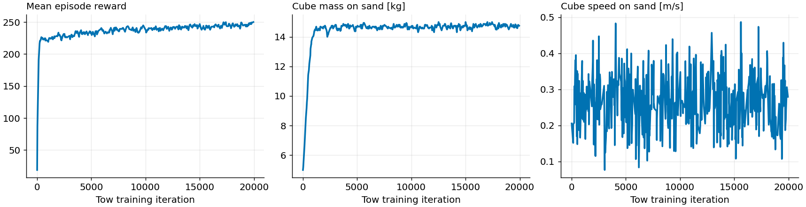
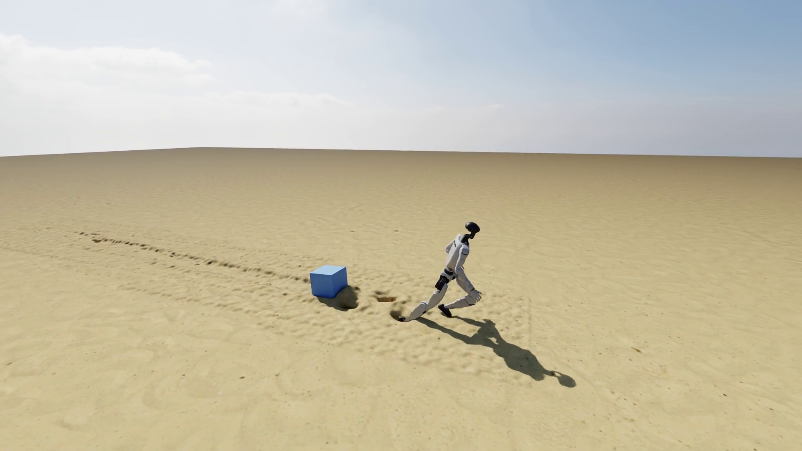

Slides built 2026-11-24. Task record. Every result is unchecked: no independent check has been done yet. One slide per embodiment and task; only G1 object towing has a result so far.
Not recorded. Max hands over the results with their provenance.
Not done in this session.
Not done in this session. The walking policies used as warm starts were trained earlier and were not evaluated here.
G1 walks on MPM sand and tows a 15 kg cube (0.3 m) by a tether tied to its pelvis while tracking a velocity command. Trained with plain PPO from a walking policy, half of the environments on rigid ground and half on MPM sand (bed 0.25 m). Evaluated at the final checkpoint on loose poppy seed, bed 0.45 m, voxel 0.04 m: 16 trials per command (2 runs of 8, seeds [42, 43]), start state as in training (random position, heading, velocity, joint angles). The command is held until the robot's path is 10 m long (goal) or the time limit ends (40 s at 0.5 m/s, 20 s at 1 m/s).
| Command | Trials | Goal reached | Falls | Time to goal [s] | vx error [m/s] | vy error [m/s] | wz error [rad/s] | Mean yaw rate [rad/s] | Robot speed [m/s] | Cube speed [m/s] |
|---|---|---|---|---|---|---|---|---|---|---|
| 0.5 m/s, straight | 16 | 16 / 16 | 0 | 21.0 ± 0.5 | 0.080 ± 0.007 | 0.046 ± 0.002 | 0.208 ± 0.018 | -0.000 ± 0.008 | 0.48 ± 0.01 | 0.47 ± 0.01 |
| 1 m/s, straight | 16 | 16 / 16 | 0 | 14.2 ± 0.5 | 0.358 ± 0.028 | 0.099 ± 0.004 | 0.291 ± 0.014 | 0.000 ± 0.006 | 0.69 ± 0.03 | 0.67 ± 0.03 |
| 0.5 m/s, turning 0.5 rad/s | 16 | 16 / 16 | 0 | 20.3 ± 0.1 | 0.044 ± 0.005 | 0.041 ± 0.002 | 0.160 ± 0.005 | 0.519 ± 0.004 | 0.51 ± 0.00 | 0.01 ± 0.00 |
| 1 m/s, turning 0.5 rad/s | 16 | 15 / 16 | 1 | 12.1 ± 0.2 | 0.242 ± 0.024 | 0.157 ± 0.028 | 0.338 ± 0.016 | 0.526 ± 0.008 | 0.85 ± 0.02 | 0.43 ± 0.08 |
Goal: the robot's path (horizontal speed summed over time) reaches 10 m before the time limit; a path length, not a distance from the start. Fall: any termination (pelvis tilt above 45° or the pelvis-height term). Errors: mean absolute difference between the base-frame velocity and the command over each trial from 5 s to its end, then mean ± std over the trials without a fall; vy is always commanded as 0. The base frame leans forward with the pelvis, so the horizontal robot speed in the world frame is given too. The wz error includes the yaw oscillation of each step; the mean yaw rate is beside it. With 0.5 m/s and 0.5 rad/s the robot walks a circle of 1 m radius, shorter than the 1.2 m tether, so the cube pivots near the centre instead of being dragged along the curve. Script scripts/benchmarks/t2/t2_slides.py on trial logs /home/jkamohara/isaac/worktrees/mpm-unification/IsaacLab/logs/t2/tow_d45 (36 runs, seeds 42, 43; isaaclab 0007b2e67 (uncommitted changes), a60612c79 (uncommitted changes); newton 48231a989 (clean), e681453df (uncommitted changes)), written by tow_check.py --randomize --goal_distance 10 on one NVIDIA RTX 5090. Policy: W&B her588wk, checkpoint 39,998 (final). Training: 46.2 h for 20,000 tow iterations on 40 NVIDIA L40 GPUs with 32 environments each (pool isaac-lab-l40-07).

/home/jkamohara/isaac/worktrees/mpm-unification/IsaacLab/logs/t2/tow_final/her588wk_history.csv, exported from W&B run her588wk./home/jkamohara/RSS_27/RSS_MPM_Project_Skill/site/T2/media/tow/tow-policy_trained-on-mixed-rigid-mpm_sand-mass-curriculum-5to15kg_g1-tow-mpm-mixed-6_iter39998/test-on-mpm-sand-bed0.45m_cube15kg_cmd1.0mps.mp4/home/jkamohara/RSS_27/RSS_MPM_Project_Skill/site/T2/media/tow/tow-policy_trained-on-mixed-rigid-mpm_sand-mass-curriculum-5to15kg_g1-tow-mpm-mixed-6_iter39998/test-on-mpm-sand-bed0.45m_cube15kg_cmd0.5-1.0-0.5-0.0mps_5s-each.mp4The comparison against policies trained on rigid ground and on RFT is on the T3 slides.
